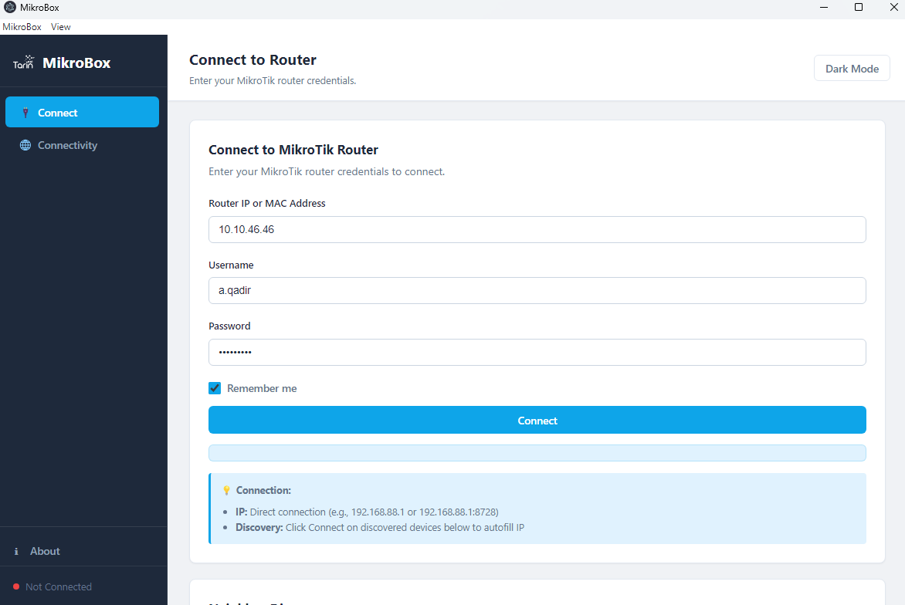
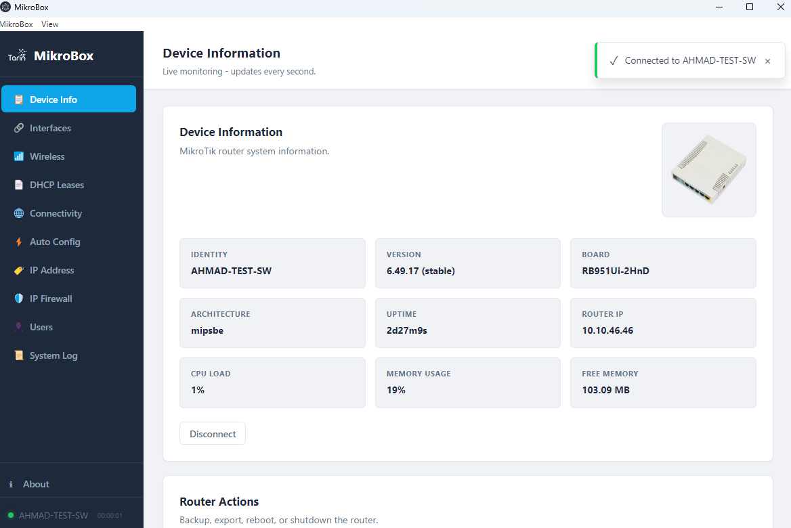
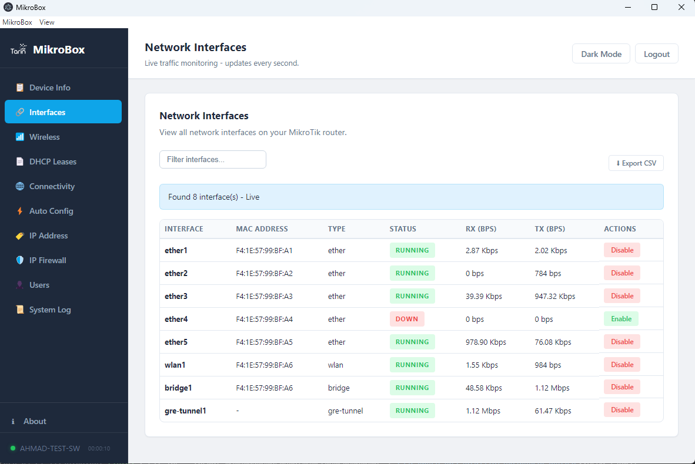

Neighbor Discovery
- MNDP discovery similar to WinBox
- Device list with identity, IP, MAC, board, and version
- Quick connect flow from discovered routers
Project Overview
MikroBox is a standalone Electron application for managing MikroTik routers from a desktop interface. It brings WinBox-style neighbor discovery together with live device monitoring, RouterOS configuration panels, wireless tools, DHCP visibility, firewall actions, and one-click automation helpers.
A focused desktop control center for MikroTik discovery, monitoring, and rapid configuration.
Capabilities extracted directly from the application code and UI.
Designed for technicians and network operators who need a fast local tool.
Screens from the actual desktop app in the portfolio assets.



Built as a standalone operations utility.
Why this tool matters in practice.
Moves common RouterOS operations into a desktop UI so technicians can inspect and act faster than a purely CLI-based workflow.
Combines local-network discovery with authenticated device management in one place instead of splitting tools.
Automation shortcuts reduce repetitive setup work and make common configuration steps more consistent across deployments.